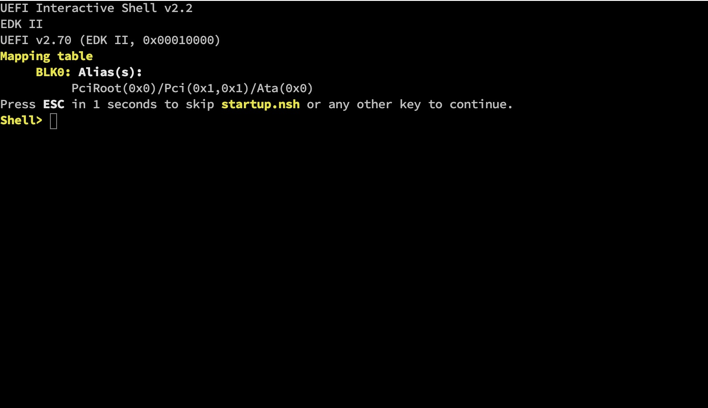
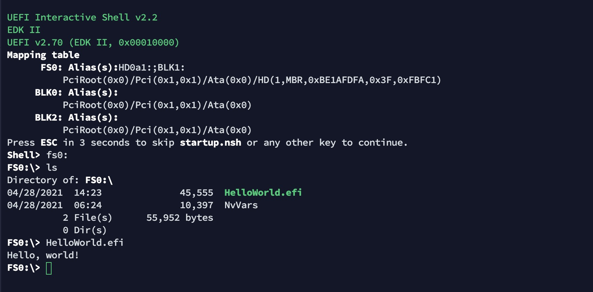

$sudo apt-get install build-essential git uuid-dev iasl nasm python3-distutils在这一章我们将运行一个uefi的实例程序，这个程序可以调用uefi提供的服务在屏幕中打印 Hello world! 。uefi不像BIOS的编程通过使用汇编，在uefi中使用C语言编程，它极大提升了编程效率。下面就开始吧。
准备
为了防止破坏真实的计算机，这里还是使用qemu模拟器，我们还需要安装GCC环境，同时还需要安装用于开发UEFI应用程序所使用的软件包，为了让qemu运行在UEFI下，我们还需要编译一个UEFI固件。
Qemu一般运行在BIOS模式下，为了让它支持运行在UEFI，我们需要一个UEFI固件，tianocore提供一个符合UEFI规范的模拟环境OVMF
-
OVMF：它是一个应用比较广泛的开源UEFI固件，它实现了UEFI规范，所以在其上运行的efi程序可以直接运行在物理环境中，在开始前我们需要编译获得一个OVMF。OVMF在开源项目EDK2下，在网上提供的一些版本发现无法运行，所以还是自己编一个好。
编译OVMF
EDK2项目实现了UEFI规范，它可以运行在多种平台之上，在这里我们只编译运行在Qemu环境下的版本。
首先需要安装编译的依赖
获取源代码
$ mkdir ~/tianocore
$ cd ~/tianocore
$ git clone git://github.com/tianocore/edk2.git
$ cd edk2编译工具，这些工具是后续编译所需要的
$ make -C BaseToolsedk2中提供了编译所需要的基本环境配置
$ . edksetup.sh然后，设置编译所需要的参数，默认参数都保存在Conf/target.txt中，所以修改对应的参数就可以了
$ vi Conf/target.txt
找到默认配置
ACTIVE_PLATFORM = Nt32Pkg/Nt32Pkg.dsc
修改为
ACTIVE_PLATFORM = MdeModulePkg/MdeModulePkg.dsc
找到默认配置
TOOL_CHAIN_TAG = MYTOOLS
修改为
TOOL_CHAIN_TAG = GCC5
找到默认配置
TARGET_ARCH = IA32
修改为
TARGET_ARCH = X64
找到默认配置
ACTIVE_PLATFORM = MdeModulePkg/MdeModulePkg.dsc
修改为，这个配置说明使用OVMF（Open Virtual Machine Firmware ）来进行编译，这个是虚拟机环境所需要的
ACTIVE_PLATFORM = OvmfPkg/OvmfPkgX64.dsc需要注意的这个配置是运行在X86_64的配置信息，其他的平台需要做对应的修改。
到这里，我们就可以开始我们的编译工作了
$ build大概过几分钟，编译过程就可以完成，编译的结果在 Build/OvmfX64/DEBUG_GCC5/FV/ 中。文件 OVMF.fd 就是虚拟环境所需要的UEFI固件。它可以帮助我们直接在Qemu中运行efi程序。
我们可以运行以下命令测试是否可以进入UEFI交互式的命令行中
$ sudo qemu-system-x86_64 -bios OVMF.fd -nographic -net none将出现以下界面

至此，我们就完成虚拟机环境下的UEFI固件的编译，也使用这个固件进入到它的环境中了。完成了准备工作，下面就进入主题，如何使用uefi提供的服务打印 Hello world!
Hello World
需要注意的是，EFI应用的开始点和规范的C语言就一点区别，规范的C语言的开始从 main 函数开始，而EFI应用则是从 efi_main 开始，让我们看看这个例子吧
#include <efi.h>
#include <efilib.h>
EFI_STATUS
EFIAPI
efi_main (EFI_HANDLE ImageHandle, EFI_SYSTEM_TABLE *SystemTable) {
InitializeLib(ImageHandle, SystemTable);
Print(L"Hello, world!\n");
return EFI_SUCCESS;
}这个程序声明了 efi_main 函数，也是EFI程序的入口，并且调用了 Print 打印了 Hello world!。这段程序和C语言
#include <uefi.h>
int main (int argc, char **argv)
{
printf("Hello, world!\n");
return 0;
}一致。这两个程序的功能一致，都是为了打印 Hello world!。
然后，我们将这段程序编译成efi程序，下面是编译所使用的的Makefile，编译过程和传统的C语言还是有很大的区别的
.POSIX:
.PHONY: all clean run
ARCH = $(shell uname -m | sed s,i[3456789]86,ia32,)
OBJS = main.o
TARGET = HelloWorld.efi
EFIINC = /usr/include/efi
EFIINCS = -I$(EFIINC) -I$(EFIINC)/$(ARCH) -I$(EFIINC)/protocol
LIB = /usr/lib
EFILIB = /usr/lib
EFI_CRT_OBJS = $(EFILIB)/crt0-efi-$(ARCH).o
EFI_LDS = $(EFILIB)/elf_$(ARCH)_efi.lds
CFLAGS = $(EFIINCS) -fno-stack-protector -fpic -fshort-wchar -mno-red-zone -Wall
ifeq ($(ARCH),x86_64)
CFLAGS += -DEFI_FUNCTION_WRAPPER
endif
LDFLAGS = -nostdlib -znocombreloc -T $(EFI_LDS) -shared \
-Bsymbolic -L $(EFILIB) -L $(LIB) $(EFI_CRT_OBJS)
all: $(TARGET)
HelloWorld.so: $(OBJS)
ld $(LDFLAGS) $(OBJS) -o $@ -lefi -lgnuefi
%.efi: %.so
objcopy -j .text -j .sdata -j .data -j .dynamic \
-j .dynsym -j .rel -j .rela -j .reloc \
--target=efi-app-$(ARCH) $^ $@
run: all
qemu-system-x86_64 -bios ovmf.fd
clean:
rm -f *.efi *.o *.so这个按照EFI规范将这段程序编译成efi程序。我们执行 make 后，就会得到 hello.efi 的efi应用。
运行EFI应用
一种简单的方式
我们得到efi应用后，efi就可以在UEFI环境下运行了，简单点的我们可以在目录中直接运行
$ cp $tianocore/edk2/Build/OvmfX64/DEBUG_GCC5/FV/OVMF.fd .
$ mkdir efibin
$ cp hello.efi image
$ qemu-system-x86_64 -nographic -bios OVMF.fd -drive file=fat:rw:efibin,media=disk,format=raw -net none然后进入到shell中，输入 fs0: 后，执行 HelloWorld.efi

到此，我们就完整的运行一个可以在屏幕中打印 Hello world! 的efi程序。这种方式能够帮助我们快速建立我们的模拟环境，但无法了解一些细节，所以也提供了另外一种形式。
复杂的方式
这种方式我们将完整的模拟一个具有EFI分区的磁盘镜像来了解EFI程序的运行。我们之前也说过UEFI固件会根据配置查找每个存储介质中的EFI分区。EFI分区是GPT分区格式中的一个分区，这个分区具有FAT（FAT12，FAT16，FAT32）文件系统。但更加通用的是FAT32的文件系统。这个方式需要root权限。
为了建立一个EFI分区，我们首先创建一个磁盘镜像
$ dd if=/dev/zero of=/path/to/uefi.img bs=512 count=93750使用dd命令创建了一个大小为48,000,000字节的空白盘（每个扇区512字节，总共93750个扇区，整个磁盘48MB），之所以使用这个大小是因为FAT32最小大小为33,548,800字节，加上GPT所需要的额外的空间。所以选择了这个大小，你也可以选择其他的大小。
下面我们将创建一个只有EFI系统分区的盘
$ gdisk /path/to/uefi.img
GPT fdisk (gdisk) version 0.8.10
Partition table scan:
MBR: not present
BSD: not present
APM: not present
GPT: not present
Creating new GPT entries.
Command (? for help): o
This option deletes all partitions and creates a new protective MBR.
Proceed? (Y/N): y
Command (? for help): n
Partition number (1-128, default 1): 1
First sector (34-93716, default = 2048) or {+-}size{KMGTP}: 2048
Last sector (2048-93716, default = 93716) or {+-}size{KMGTP}: 93716
Current type is 'Linux filesystem'
Hex code or GUID (L to show codes, Enter = 8300): ef00
Changed type of partition to 'EFI System'
Command (? for help): w
Final checks complete. About to write GPT data. THIS WILL OVERWRITE EXISTING
PARTITIONS!!
Do you want to proceed? (Y/N): y
OK; writing new GUID partition table (GPT) to uefi.img.
Warning: The kernel is still using the old partition table.
The new table will be used at the next reboot.
The operation has completed successfully.执行完上面的命令后，我们就有了一个GPT分区的EFI系统分区的磁盘镜像了，这个磁盘镜像使用521字节的扇区，EFI分区从1,048,576（2048 * 512）字节开始，大小为46,934,528 （(93716 - 2048 + 1) * 512）字节。 这个EFI系统分区还没有格式化，下面我们将这个EFI系统分区格式化成FAT32文件系统。
# losetup --offset 1048576 --sizelimit 46934528 /dev/loop0 /path/to/uefi.img如果发现设备忙，可以使用其他的回环设备。
使用挂在的回环设备，格式化文件系统
# mkdosfs -F 32 /dev/loop0将回环设备挂在到挂载点
# mount /dev/loop0 /mnt将efi文件拷贝到efi分区中
$ cp /path/to/HelloWorld.efi /mnt/然后，卸载挂载点，释放回环设备
$ umount /mnt
$ losetup -d /dev/loop0uefi.img 通过以上步骤我们生成了具有GPT分区表，包含一个EFI系统分区，这个系统分区中包含一个 HelloWorld.efi 文件。
下面就可以运行这个程序了
$ qemu-system-x86_64 -cpu qemu64 -bios OVMF.fd -drive file=uefi.img,if=ide -net none这里之所以将net设置为none，是为了关闭PXE引导。
总结
通过这个文章，我们应该如何编译OVMF，使用这个固件建立Qemu的模拟环境，学会如何编写一个efi应用，并且如何建立一个具有EFI系统分区的磁盘镜像。
附录
如何使用非root创建UEFI磁盘镜像
$ dd if=/dev/zero of=uefi.img bs=512 count=93750
$ parted uefi.img -s -a minimal mklabel gpt
$ parted uefi.img -s -a minimal mkpart EFI FAT16 2048s 93716s
$ parted uefi.img -s -a minimal toggle 1 boot
$ dd if=/dev/zero of=/tmp/part.img bs=512 count=91669
$ mformat -i /tmp/part.img -h 32 -t 32 -n 64 -c 1
$ mcopy -i /tmp/part.img main.efi ::
$ dd if=/tmp/part.img of=uefi.img bs=512 count=91669 seek=2048 conv=notrunc